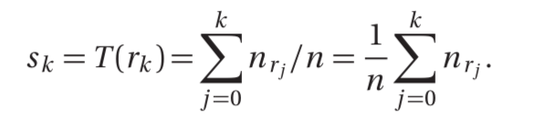
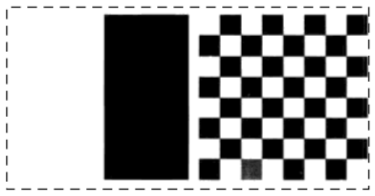
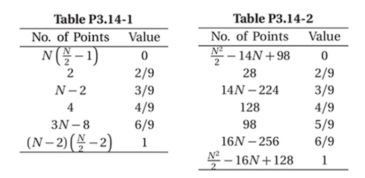
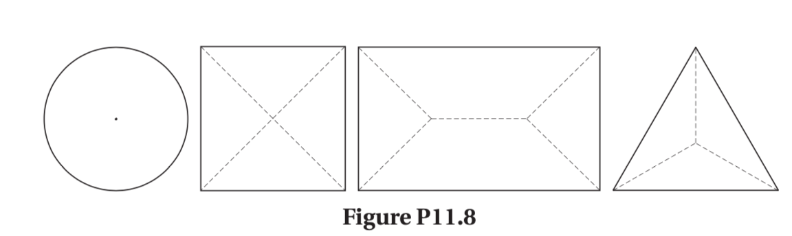

数字图像处理习题
备注
- 数字图像处理 - 冈萨雷斯 - 第三版中文版
- 习题答案为英文版翻译删减版 + 小部分个人理解
C2[6, 22]
- 2.6 某汽车制造商想在一条限量版跑车生产线上将一些零件自动安放在跑车保险杠上，这一部件就是彩色坐标，为选择合适的保险杠零件，机器人需要知道每辆车的颜色。模型有4种颜色：蓝色、绿色、红色、白色。请提出一种基于成像的解决方案。你怎样解决自动确定每辆跑车颜色的问题？记住，在选择零件时价格是最主要的考虑因素。
- 一种可能的解决方案是为单色相机配备机械装置，该装置在镜头前依次放置红色，绿色和蓝色通过滤光器。相机最强的响应决定了颜色。 如果所有三个响应大致相等，则为白色。
- 更快的系统将使用三个不同的相机，每个相机配备一个单独的滤光器。 然后，轮询每个摄像机的响应进行分析。 这个系统会贵一点，但会更快，更可靠。
- 请注意，两种解决方案都假设摄像机的视野是完全由均匀的颜色填充[即，摄像机聚焦在车辆的一部分上 它的颜色可见。 否则，需要进一步分析以隔离均匀颜色的区域，这是解决该问题所关注的所有问题。
- 2.22 图像相减通常用于在生产线上检测缺失的元件。方法是存储一幅对应于正确组装的“金”图像；然后，从相同产品的传入图像中减去该图像。理想情况下，如果新产品组装正确，则差值为零。对于缺失元件的产品，在不同于金图像的位置，差值图像将不为零。在实际中，你认为在什么条件下使用这种方式工作才是合适的？
- 有三个基本因素需要严格控制基于差异的检查才能发挥作用：
- （1）正确组装：产品会打上特殊标记，用于图像的对齐。如果它相对于金图像移位，则比较它们之间的差值是没有意义的。
- （2）照明控制：照明的变化会显着影响差值图像中的值。所以必须保证照明控制，才不会对差值图像的结果产生影响。
- （3）足够低的噪声水平：这样才不会对黄金和输入图像之间的比较产生实质性影响。良好的信号强度对降低噪声影响有很大帮助。
- （4）设定阈值，使传入的图像与金图像的差值对比足够接近也能接受。
- 灰度分辨率，结合课后习题。
C3[5, 6, 7, 14]
3.5 (a) 通常，如果将低阶比特平面的一半设为零值，对一幅图像的直方图有何影响？
- 具有不同灰度值的像素的数量将减少，从而导致直方图中的分量的数量减少。由于像素的数量不会改变，所以这将导致剩下的直方图分量的(幅值)高度增加。通常，灰度值的丰富性降低会导致对比度下降。
3.5 (b) 如果将高阶比特平面的一半设为零值，对一幅图像的直方图有何影响？
- 最明显的效果是图像显著变暗。例如，丢弃最高位将会使8位图像中最亮的亮度限制在127.由于像素数保持不变，直方图的某些峰值的高度会增加，总体呈现出更高更窄的直方图。
3.6 试解释为什么离散直方图均衡技术一般不能得到平坦的直方图？
- 直方图均衡所做的事是在亮度范围上重新映射直方图的分量。为了获得平坦的直方图，需要重新分配像素灰度值，直方图均衡没有灰度值重新分配的过程。
3.7 假设对一幅数字图像进行直方图均衡处理。试证明(对直方图均衡化的图像)进行第二次直方图均衡处理的结果，与第一次直方图均衡处理的结果相同。
令n = MN，像素的总数，nrj是具有灰度值rj的输入图像的像素个数。那么直方图均衡处理为：
因为每个具有灰度值 rk 的像素被映射到灰度值 sk ，所以nsk = nrk 。第二次直方图均衡处理将产生值vk
- 由于nsk = nrk ：
- 这表明直方图均衡的第二次处理结果与第一次处理相同。(舍入误差忽略不计)
3.14 如图所示图像很不相同，但它们的直方图却相同，假设每幅图像都用一个3x3的均值模版来进行模糊处理。
模糊后图像的直方图还相同吗？试解释原因。
右侧图像中黑色和白色区域之间的边界点数量要多得多。当进行模糊处理时，边界点将在右侧产生更多数量的不同值，因此模糊处理后的直方图不同。
如果你的答案是不相同，画出两个直方图。
3x3的均值模版，其系数为1/9。假设图片的大小为NxN，用0的边框环绕图像。模糊处理后两张图像的值如下表所示：

第三章的概念，需要掌握：平滑滤波，中值滤波，直方图等。公式不会考，需要掌握定性的内容如：高频，低频，滤波器，etc
C11[1, 2, 8]
11.1(a) 重新定义链码的一个起始点，以便所得的数字序列形成一个最小整数。请证明该编码与边界的初始起点无关。
- 链码中每个元素的值都与其前元素的值相关。 以一致方式（例如，顺时针方向）跟踪的边界的代码是唯一的圆形数字集。 从该集合中的不同位置开始不会改变循环序列的结构。
- 选择最小整数作为起始点只是标识序列中的相同点。 即使起点不是唯一的，这种方法仍然会给出一个独特的序列。 例如，序列101010具有三个可能的起始点，但它们都产生相同的最小整数010101。
11.1(b) 求编码10176722335422的归一化起始点。
- 代码：11076765543322.起点为0，产生序列07676554332211。
11.2(a) 证明链码的一次差分会将该链码关于旋转归一化
- 一次差分仅计算分隔代码的相邻元素的方向数。 因为计数过程与方向无关，所以第一个差异与边界旋转无关。 （这里的假设是旋转不会改变代码本身）。
11.2(b)计算编码0110233210332322111的一次差分
- 编码：0101030303323232212111
- 差分：3131331313031313031300。
- 编码被视为循环序列，因此差分的第一个元素是代码的最后一个元素和第一个元素之间的方向变化数，如文中所述。
11.8 画出下列图形的中轴：一个圆，一个等边五角形，一个矩形，一个等边三角形
